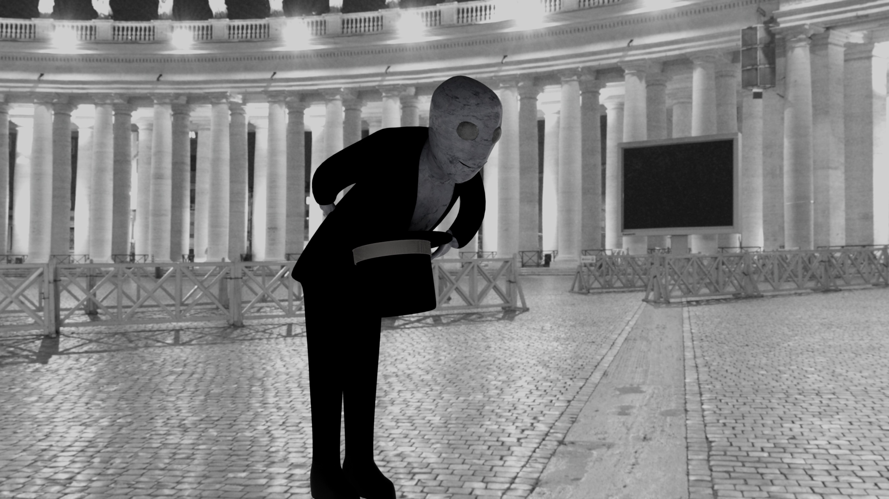

Bielzebub
Ce personage a été modèlisé dans le cadre de mon cours de modélisation 3d, mon but était de créer ma propre vision du démon mythologique Bielzebub et le représenter sous une forme humanoïde.
La modélisation à été entièrement faite sur Maya, l'image de fond ne m'appartient pas.